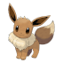
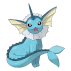
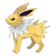
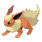
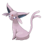
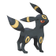
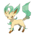
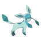
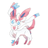

-
Eevee #0133
- Normal
Sua capacidade de evoluir para muitas formas permite que ele se adapte suave e perfeitamente a qualquer ambiente. Seu código genético é irregular. Ele pode sofrer mutação se for exposto à radiação de pedras elementais.
-
Vaporeon #0134
- Água
Vive perto da água. Sua longa cauda é sulcada por uma barbatana, que é frequentemente confundida com a de uma sereia. Sua composição celular é similar à de moléculas de água. Como resultado, não pode ser visto quando derrete na água.
-
Jolteon #0135
- Elétrico
Ele concentra as fracas cargas elétricas emitidas por suas células e lança raios perversos. Se agitado, ele usa eletricidade para alisar seu pelo e lançá-lo em pequenos tufos.
-
Flareon #0136
- Fogo
O ar inalado é levado até seu saco de chamas, aquecido e exalado como fogo que atinge mais de 3.000 graus Fahrenheit. Ele afofa sua gola de pele para resfriar sua temperatura corporal, que pode chegar a 1.650 graus Fahrenheit.
-
Espeon #0196
- Psíquico
A ponta de sua cauda bifurcada treme quando ele prevê o próximo movimento do oponente. Ele usa os pelos finos que cobrem seu corpo para sentir as correntes de ar e prever as ações de seus inimigos.
-
Umbreon #0197
- Dark
Quando exposto à aura da lua, os anéis em seu corpo brilham fracamente e ele ganha um poder misterioso. Quando a escuridão cai, os anéis no corpo começam a brilhar, causando medo nos corações de todos que estiverem por perto.
-
Leafeon #0470
- Grama
Quando você vê Leafeon dormindo em um pedaço de sol, você sabe que ele está usando fotossíntese para produzir ar limpo. Quanto mais jovens, mais cheiram a grama fresca. Com a idade, sua fragrância assume o odor de folhas caídas.
-
Glaceon #0471
- Gelo
Ele pode controlar sua temperatura corporal à vontade. Isso permite que ele congele a umidade da atmosfera, criando rajadas de pó de diamante. Ele abaixa o calor do corpo para congelar o pelo. Os pelos então se tornam como agulhas que ele pode disparar.
-
Sylveon #0700
- Fada
Sylveon tem uma figura elegante enquanto dança levemente, com as antenas vibrando, mas seus movimentos penetrantes miram diretamente nos pontos fracos de seus oponentes. Este Pokémon usa suas antenas em forma de fita para enviar uma aura calmante aos seus oponentes, eliminando sua hostilidade.